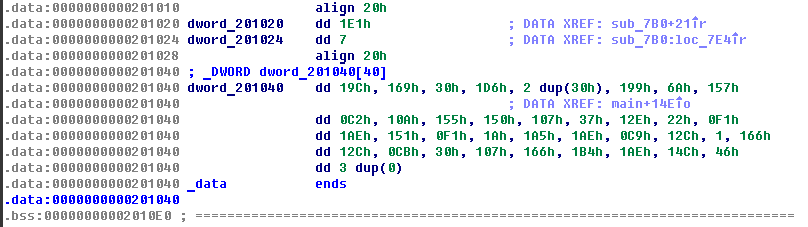

<!DOCTYPE html>
<html>
<head>
  <meta charset="utf-8">
  

  
  <title>Bamboofox2017-little-asm-revenge | CatPawn</title>
  <meta name="viewport" content="width=device-width, initial-scale=1, maximum-scale=1">
  <meta name="description" content="Questionlittle-asm-revenge Solution扔入ida睇下個main咩料先 123456789101112131415161718192021222324252627282930313233343536373839404142434445__int64 __fastcall main(__int64 a1, char **a2, char **a3)&amp;#123;  __i">
<meta property="og:type" content="article">
<meta property="og:title" content="Bamboofox2017-little-asm-revenge">
<meta property="og:url" content="https://catpawn.github.io/2018/01/01/Bamboofox2017-little-asm-revenge/index.html">
<meta property="og:site_name" content="CatPawn">
<meta property="og:description" content="Questionlittle-asm-revenge Solution扔入ida睇下個main咩料先 123456789101112131415161718192021222324252627282930313233343536373839404142434445__int64 __fastcall main(__int64 a1, char **a2, char **a3)&amp;#123;  __i">
<meta property="og:image" content="https://catpawn.github.io/2018/01/01/Bamboofox2017-little-asm-revenge/img1.png">
<meta property="og:updated_time" content="2018-01-01T09:22:07.308Z">
<meta name="twitter:card" content="summary">
<meta name="twitter:title" content="Bamboofox2017-little-asm-revenge">
<meta name="twitter:description" content="Questionlittle-asm-revenge Solution扔入ida睇下個main咩料先 123456789101112131415161718192021222324252627282930313233343536373839404142434445__int64 __fastcall main(__int64 a1, char **a2, char **a3)&amp;#123;  __i">
<meta name="twitter:image" content="https://catpawn.github.io/2018/01/01/Bamboofox2017-little-asm-revenge/img1.png">
  
    <link rel="alternate" href="/atom.xml" title="CatPawn" type="application/atom+xml">
  
  
    <link rel="icon" href="/favicon.png">
  
  
    <link href="//fonts.googleapis.com/css?family=Source+Code+Pro" rel="stylesheet" type="text/css">
  
  <link rel="stylesheet" href="/css/style.css">
</head>

<body>
  <div id="container">
    <div id="wrap">
      <header id="header">
  <div id="banner"></div>
  <div id="header-outer" class="outer">
    <div id="header-title" class="inner">
      <h1 id="logo-wrap">
        <a href="/" id="logo">CatPawn</a>
      </h1>
      
    </div>
    <div id="header-inner" class="inner">
      <nav id="main-nav">
        <a id="main-nav-toggle" class="nav-icon"></a>
        
          <a class="main-nav-link" href="/">Home</a>
        
          <a class="main-nav-link" href="/archives">Archives</a>
        
      </nav>
      <nav id="sub-nav">
        
          <a id="nav-rss-link" class="nav-icon" href="/atom.xml" title="RSS Feed"></a>
        
        <a id="nav-search-btn" class="nav-icon" title="Suche"></a>
      </nav>
      <div id="search-form-wrap">
        <form action="//google.com/search" method="get" accept-charset="UTF-8" class="search-form"><input type="search" name="q" class="search-form-input" placeholder="Search"><button type="submit" class="search-form-submit">&#xF002;</button><input type="hidden" name="sitesearch" value="https://catpawn.github.io"></form>
      </div>
    </div>
  </div>
</header>
      <div class="outer">
        <section id="main"><article id="post-Bamboofox2017-little-asm-revenge" class="article article-type-post" itemscope itemprop="blogPost">
  <div class="article-meta">
    <a href="/2018/01/01/Bamboofox2017-little-asm-revenge/" class="article-date">
  <time datetime="2018-01-01T09:12:48.000Z" itemprop="datePublished">2018-01-01</time>
</a>
    
  </div>
  <div class="article-inner">
    
    
      <header class="article-header">
        
  
    <h1 class="article-title" itemprop="name">
      Bamboofox2017-little-asm-revenge
    </h1>
  

      </header>
    
    <div class="article-entry" itemprop="articleBody">
      
        <h2 id="Question"><a href="#Question" class="headerlink" title="Question"></a>Question</h2><p><a href="little-asm-revenge">little-asm-revenge</a></p>
<h2 id="Solution"><a href="#Solution" class="headerlink" title="Solution"></a>Solution</h2><p>扔入ida睇下個main咩料先</p>
<figure class="highlight c"><table><tr><td class="gutter"><pre><span class="line">1</span><br><span class="line">2</span><br><span class="line">3</span><br><span class="line">4</span><br><span class="line">5</span><br><span class="line">6</span><br><span class="line">7</span><br><span class="line">8</span><br><span class="line">9</span><br><span class="line">10</span><br><span class="line">11</span><br><span class="line">12</span><br><span class="line">13</span><br><span class="line">14</span><br><span class="line">15</span><br><span class="line">16</span><br><span class="line">17</span><br><span class="line">18</span><br><span class="line">19</span><br><span class="line">20</span><br><span class="line">21</span><br><span class="line">22</span><br><span class="line">23</span><br><span class="line">24</span><br><span class="line">25</span><br><span class="line">26</span><br><span class="line">27</span><br><span class="line">28</span><br><span class="line">29</span><br><span class="line">30</span><br><span class="line">31</span><br><span class="line">32</span><br><span class="line">33</span><br><span class="line">34</span><br><span class="line">35</span><br><span class="line">36</span><br><span class="line">37</span><br><span class="line">38</span><br><span class="line">39</span><br><span class="line">40</span><br><span class="line">41</span><br><span class="line">42</span><br><span class="line">43</span><br><span class="line">44</span><br><span class="line">45</span><br></pre></td><td class="code"><pre><span class="line">__int64 __<span class="function">fastcall <span class="title">main</span><span class="params">(__int64 a1, <span class="keyword">char</span> **a2, <span class="keyword">char</span> **a3)</span></span></span><br><span class="line"><span class="function"></span>&#123;</span><br><span class="line">  __int64 result; <span class="comment">// rax@9</span></span><br><span class="line">  __int64 v4; <span class="comment">// rsi@13</span></span><br><span class="line">  <span class="keyword">unsigned</span> <span class="keyword">int</span> i; <span class="comment">// [sp+0h] [bp-E0h]@1</span></span><br><span class="line">  <span class="keyword">int</span> j; <span class="comment">// [sp+4h] [bp-DCh]@4</span></span><br><span class="line">  <span class="keyword">int</span> k; <span class="comment">// [sp+8h] [bp-D8h]@7</span></span><br><span class="line">  <span class="keyword">int</span> v8; <span class="comment">// [sp+Ch] [bp-D4h]@1</span></span><br><span class="line">  <span class="keyword">int</span> v9[<span class="number">40</span>]; <span class="comment">// [sp+10h] [bp-D0h]@4</span></span><br><span class="line">  <span class="keyword">char</span> s[<span class="number">8</span>]; <span class="comment">// [sp+B0h] [bp-30h]@1</span></span><br><span class="line">  __int64 v11; <span class="comment">// [sp+B8h] [bp-28h]@1</span></span><br><span class="line">  __int64 v12; <span class="comment">// [sp+C0h] [bp-20h]@1</span></span><br><span class="line">  __int64 v13; <span class="comment">// [sp+C8h] [bp-18h]@1</span></span><br><span class="line">  __int64 v14; <span class="comment">// [sp+D0h] [bp-10h]@1</span></span><br><span class="line">  __int64 v15; <span class="comment">// [sp+D8h] [bp-8h]@1</span></span><br><span class="line"></span><br><span class="line">  v15 = *MK_FP(__FS__, <span class="number">40L</span>L);</span><br><span class="line">  <span class="built_in">puts</span>(<span class="string">"Input magic string:"</span>);</span><br><span class="line">  *(_QWORD *)s = <span class="number">0L</span>L;</span><br><span class="line">  v11 = <span class="number">0L</span>L;</span><br><span class="line">  v12 = <span class="number">0L</span>L;</span><br><span class="line">  v13 = <span class="number">0L</span>L;</span><br><span class="line">  v14 = <span class="number">0L</span>L;</span><br><span class="line">  _isoc99_scanf(<span class="string">"%38s"</span>, s);</span><br><span class="line">  v8 = <span class="built_in">strlen</span>(s);</span><br><span class="line">  <span class="keyword">for</span> ( i = <span class="number">0</span>; (<span class="keyword">signed</span> <span class="keyword">int</span>)i &lt; v8; ++i )</span><br><span class="line">    s[i] ^= sub_7F4(i);</span><br><span class="line">  <span class="built_in">memset</span>(v9, <span class="number">0</span>, <span class="keyword">sizeof</span>(v9));</span><br><span class="line">  <span class="keyword">for</span> ( j = <span class="number">0</span>; j &lt; v8; ++j )</span><br><span class="line">    v9[j] = sub_7B0((<span class="keyword">unsigned</span> <span class="keyword">int</span>)s[j]);</span><br><span class="line">  <span class="keyword">for</span> ( k = <span class="number">0</span>; k &lt; v8; ++k )</span><br><span class="line">  &#123;</span><br><span class="line">    <span class="keyword">if</span> ( v9[k] != dword_201040[k] )</span><br><span class="line">    &#123;</span><br><span class="line">      <span class="built_in">puts</span>(<span class="string">"Are you sure you read asm?"</span>);</span><br><span class="line">      result = <span class="number">0L</span>L;</span><br><span class="line">      <span class="keyword">goto</span> LABEL_13;</span><br><span class="line">    &#125;</span><br><span class="line">  &#125;</span><br><span class="line">  <span class="built_in">puts</span>(<span class="string">"Wooow you got it!"</span>);</span><br><span class="line">  result = <span class="number">0L</span>L;</span><br><span class="line">LABEL_13:</span><br><span class="line">  v4 = *MK_FP(__FS__, <span class="number">40L</span>L) ^ v15;</span><br><span class="line">  <span class="keyword">return</span> result;</span><br><span class="line">&#125;</span><br></pre></td></tr></table></figure>
<p>首先個program會讀38位Input<br><figure class="highlight c"><table><tr><td class="gutter"><pre><span class="line">1</span><br></pre></td><td class="code"><pre><span class="line">_isoc99_scanf(<span class="string">"%38s"</span>, s);</span><br></pre></td></tr></table></figure></p>
<p>然後會用 sub_7F4 呢個function提供既return value做xor<br><figure class="highlight c"><table><tr><td class="gutter"><pre><span class="line">1</span><br><span class="line">2</span><br></pre></td><td class="code"><pre><span class="line"><span class="keyword">for</span> ( i = <span class="number">0</span>; (<span class="keyword">signed</span> <span class="keyword">int</span>)i &lt; v8; ++i )</span><br><span class="line">    s[i] ^= sub_7F4(i);</span><br></pre></td></tr></table></figure></p>
<p>然後會將xor完既結果逐個入落去sub_7B0做運算 , 然後將return value逐個扔番入v9<br><figure class="highlight c"><table><tr><td class="gutter"><pre><span class="line">1</span><br><span class="line">2</span><br></pre></td><td class="code"><pre><span class="line"><span class="keyword">for</span> ( j = <span class="number">0</span>; j &lt; v8; ++j )</span><br><span class="line">    v9[j] = sub_7B0((<span class="keyword">unsigned</span> <span class="keyword">int</span>)s[j]);</span><br></pre></td></tr></table></figure></p>
<p>最後會將v9 同 dword_201040逐個byte做對比<br><figure class="highlight c"><table><tr><td class="gutter"><pre><span class="line">1</span><br><span class="line">2</span><br><span class="line">3</span><br><span class="line">4</span><br><span class="line">5</span><br><span class="line">6</span><br><span class="line">7</span><br><span class="line">8</span><br><span class="line">9</span><br></pre></td><td class="code"><pre><span class="line"><span class="keyword">for</span> ( k = <span class="number">0</span>; k &lt; v8; ++k )</span><br><span class="line">  &#123;</span><br><span class="line">    <span class="keyword">if</span> ( v9[k] != dword_201040[k] )</span><br><span class="line">    &#123;</span><br><span class="line">      <span class="built_in">puts</span>(<span class="string">"Are you sure you read asm?"</span>);</span><br><span class="line">      result = <span class="number">0L</span>L;</span><br><span class="line">      <span class="keyword">goto</span> LABEL_13;</span><br><span class="line">    &#125;</span><br><span class="line">  &#125;</span><br></pre></td></tr></table></figure></p>
<p>咁既話即係首先我地要知道 dword_201040 放緊D乜<br></p>
<p>同埋sub_7F4 , sub_7B0 做緊乜<br><figure class="highlight c"><table><tr><td class="gutter"><pre><span class="line">1</span><br><span class="line">2</span><br><span class="line">3</span><br><span class="line">4</span><br><span class="line">5</span><br><span class="line">6</span><br><span class="line">7</span><br><span class="line">8</span><br><span class="line">9</span><br><span class="line">10</span><br><span class="line">11</span><br><span class="line">12</span><br><span class="line">13</span><br><span class="line">14</span><br><span class="line">15</span><br></pre></td><td class="code"><pre><span class="line">__int64 __<span class="function">fastcall <span class="title">sub_7F4</span><span class="params">(<span class="keyword">int</span> a1)</span></span></span><br><span class="line"><span class="function"></span>&#123;</span><br><span class="line">  <span class="keyword">int</span> v2; <span class="comment">// [sp+Ch] [bp-8h]@1</span></span><br><span class="line">  <span class="keyword">signed</span> <span class="keyword">int</span> i; <span class="comment">// [sp+10h] [bp-4h]@1</span></span><br><span class="line"></span><br><span class="line">  v2 = a1;</span><br><span class="line">  <span class="keyword">for</span> ( i = <span class="number">0</span>; i &lt;= <span class="number">6</span>; ++i )</span><br><span class="line">  &#123;</span><br><span class="line">    <span class="keyword">if</span> ( i &amp; <span class="number">1</span> )</span><br><span class="line">      v2 ^= <span class="number">1</span> &lt;&lt; i;</span><br><span class="line">    <span class="keyword">else</span></span><br><span class="line">      v2 |= <span class="number">1</span> &lt;&lt; i;</span><br><span class="line">  &#125;</span><br><span class="line">  <span class="keyword">return</span> (<span class="keyword">unsigned</span> __int8)v2;</span><br><span class="line">&#125;</span><br></pre></td></tr></table></figure></p>
<figure class="highlight c"><table><tr><td class="gutter"><pre><span class="line">1</span><br><span class="line">2</span><br><span class="line">3</span><br><span class="line">4</span><br><span class="line">5</span><br><span class="line">6</span><br><span class="line">7</span><br><span class="line">8</span><br><span class="line">9</span><br><span class="line">10</span><br></pre></td><td class="code"><pre><span class="line">__int64 __<span class="function">fastcall <span class="title">sub_7B0</span><span class="params">(<span class="keyword">int</span> a1)</span></span></span><br><span class="line"><span class="function"></span>&#123;</span><br><span class="line">  <span class="keyword">int</span> v2; <span class="comment">// [sp+Ch] [bp-8h]@1</span></span><br><span class="line">  <span class="keyword">int</span> i; <span class="comment">// [sp+10h] [bp-4h]@1</span></span><br><span class="line"></span><br><span class="line">  v2 = <span class="number">1</span>;</span><br><span class="line">  <span class="keyword">for</span> ( i = <span class="number">0</span>; i &lt; dword_201024; ++i )</span><br><span class="line">    v2 = a1 * v2 % dword_201020;</span><br><span class="line">  <span class="keyword">return</span> (<span class="keyword">unsigned</span> <span class="keyword">int</span>)v2;</span><br><span class="line">&#125;</span><br></pre></td></tr></table></figure>
<p>原來仲有個 dword_201024<br><figure class="highlight plain"><table><tr><td class="gutter"><pre><span class="line">1</span><br></pre></td><td class="code"><pre><span class="line">.data:0000000000201024 dword_201024    dd 7                    ; DATA XREF: sub_7B0:loc_7E4r</span><br></pre></td></tr></table></figure></p>
<p>咁就應該齊料寫個program去爆番條flag出黎<br><figure class="highlight c++"><table><tr><td class="gutter"><pre><span class="line">1</span><br><span class="line">2</span><br><span class="line">3</span><br><span class="line">4</span><br><span class="line">5</span><br><span class="line">6</span><br><span class="line">7</span><br><span class="line">8</span><br><span class="line">9</span><br><span class="line">10</span><br><span class="line">11</span><br><span class="line">12</span><br><span class="line">13</span><br><span class="line">14</span><br><span class="line">15</span><br><span class="line">16</span><br><span class="line">17</span><br><span class="line">18</span><br><span class="line">19</span><br><span class="line">20</span><br><span class="line">21</span><br><span class="line">22</span><br><span class="line">23</span><br><span class="line">24</span><br><span class="line">25</span><br><span class="line">26</span><br><span class="line">27</span><br><span class="line">28</span><br><span class="line">29</span><br><span class="line">30</span><br><span class="line">31</span><br><span class="line">32</span><br><span class="line">33</span><br><span class="line">34</span><br><span class="line">35</span><br><span class="line">36</span><br><span class="line">37</span><br><span class="line">38</span><br><span class="line">39</span><br><span class="line">40</span><br><span class="line">41</span><br><span class="line">42</span><br><span class="line">43</span><br><span class="line">44</span><br><span class="line">45</span><br><span class="line">46</span><br><span class="line">47</span><br><span class="line">48</span><br><span class="line">49</span><br><span class="line">50</span><br><span class="line">51</span><br><span class="line">52</span><br><span class="line">53</span><br></pre></td><td class="code"><pre><span class="line"><span class="meta">#<span class="meta-keyword">include</span> <span class="meta-string">"stdafx.h"</span></span></span><br><span class="line"></span><br><span class="line"><span class="function"><span class="keyword">int</span> <span class="title">sub_7F4</span><span class="params">(<span class="keyword">int</span> a1)</span></span>;</span><br><span class="line"><span class="function"><span class="keyword">int</span> <span class="title">sub_7B0</span><span class="params">(<span class="keyword">int</span> a1)</span></span>;</span><br><span class="line"></span><br><span class="line"><span class="keyword">int</span> ida_chars2[] =</span><br><span class="line">&#123;</span><br><span class="line">	<span class="number">0x19c</span>, <span class="number">0x169</span>, <span class="number">0x30</span>, <span class="number">0x1d6</span>, <span class="number">0x30</span>, <span class="number">0x30</span>, <span class="number">0x199</span>,<span class="number">0x6a</span>, <span class="number">0x157</span>, <span class="number">0x0c2</span>,</span><br><span class="line">	<span class="number">0x10a</span>, <span class="number">0x155</span>, <span class="number">0x150</span>, <span class="number">0x107</span>, <span class="number">0x37</span>, <span class="number">0x12e</span>, <span class="number">0x22</span>, <span class="number">0x0f1</span>, <span class="number">0x1ae</span>,</span><br><span class="line">	<span class="number">0x151</span>, <span class="number">0x0f1</span>, <span class="number">0x1a</span>, <span class="number">0x1a5</span>, <span class="number">0x1ae</span>, <span class="number">0x0c9</span>, <span class="number">0x12c</span>, <span class="number">0x1</span>, <span class="number">0x166</span>,</span><br><span class="line">	<span class="number">0x12c</span>, <span class="number">0x0cb</span>, <span class="number">0x30</span>, <span class="number">0x107</span>, <span class="number">0x166</span>, <span class="number">0x1b4</span>, <span class="number">0x1ae</span>, <span class="number">0x14c</span>, <span class="number">0x46</span>, <span class="number">0x00</span>, <span class="number">0x00</span>, <span class="number">0x00</span></span><br><span class="line">&#125;;</span><br><span class="line"></span><br><span class="line"><span class="function"><span class="keyword">int</span> <span class="title">main</span><span class="params">()</span></span></span><br><span class="line"><span class="function"></span>&#123;</span><br><span class="line">	<span class="keyword">int</span> size = <span class="number">40</span>;</span><br><span class="line">	<span class="keyword">int</span> index = <span class="number">0</span>;</span><br><span class="line">	<span class="keyword">while</span> (<span class="number">1</span>) &#123;</span><br><span class="line">		<span class="keyword">for</span> (<span class="keyword">int</span> i = <span class="number">0x30</span>; i &lt; <span class="number">0x126</span>; i++) &#123;</span><br><span class="line">			<span class="keyword">int</span> flag = i;</span><br><span class="line">			flag ^= sub_7F4(index);</span><br><span class="line">			<span class="keyword">if</span> (sub_7B0(flag) == ida_chars2[index]) &#123;</span><br><span class="line">				<span class="built_in">printf</span>(<span class="string">"%c"</span>, i);</span><br><span class="line">				index++;</span><br><span class="line">			&#125;</span><br><span class="line">			<span class="keyword">if</span> (index == <span class="number">38</span>)</span><br><span class="line">				<span class="keyword">break</span>;</span><br><span class="line">		&#125;</span><br><span class="line">	&#125;</span><br><span class="line">	getchar();</span><br><span class="line">    <span class="keyword">return</span> <span class="number">0</span>;</span><br><span class="line">&#125;</span><br><span class="line"></span><br><span class="line"><span class="function"><span class="keyword">int</span> <span class="title">sub_7B0</span><span class="params">(<span class="keyword">int</span> a1)</span> </span>&#123;</span><br><span class="line">	<span class="keyword">int</span> v2 = <span class="number">1</span>;</span><br><span class="line">	<span class="keyword">for</span> (<span class="keyword">int</span> i = <span class="number">0</span>; i &lt; <span class="number">7</span>; ++i) &#123;</span><br><span class="line">		v2 = a1 * v2 % <span class="number">0x1e1</span>;</span><br><span class="line">	&#125;</span><br><span class="line">	<span class="keyword">return</span> v2;</span><br><span class="line">&#125;</span><br><span class="line"></span><br><span class="line"><span class="function"><span class="keyword">int</span> <span class="title">sub_7F4</span><span class="params">(<span class="keyword">int</span> a1)</span> </span>&#123;</span><br><span class="line">	<span class="keyword">int</span> v2;</span><br><span class="line">	v2 = a1;</span><br><span class="line"></span><br><span class="line">	<span class="keyword">for</span> (<span class="keyword">int</span> i = <span class="number">0</span>; i &lt;= <span class="number">6</span>; ++i) &#123;</span><br><span class="line">		<span class="keyword">if</span> (i &amp; <span class="number">1</span>)</span><br><span class="line">			v2 ^= <span class="number">1</span> &lt;&lt; i;</span><br><span class="line">		<span class="keyword">else</span></span><br><span class="line">			v2 |= <span class="number">1</span> &lt;&lt; i;</span><br><span class="line">	&#125;</span><br><span class="line">	<span class="keyword">return</span> v2;</span><br><span class="line">&#125;</span><br></pre></td></tr></table></figure></p>
<h2 id="Flag"><a href="#Flag" class="headerlink" title="Flag"></a>Flag</h2><p>BAMBOOFOX{Th4t_1S_s0_eAsY_tO_rEverS3}</p>

      
    </div>
    <footer class="article-footer">
      <a data-url="https://catpawn.github.io/2018/01/01/Bamboofox2017-little-asm-revenge/" data-id="cjetvs9gn0001dgw5ijh6bmwm" class="article-share-link">Teilen</a>
      
      
    </footer>
  </div>
  
    
<nav id="article-nav">
  
    <a href="/2018/01/01/Bamboofox2017-net-packet/" id="article-nav-newer" class="article-nav-link-wrap">
      <strong class="article-nav-caption">Neuer</strong>
      <div class="article-nav-title">
        
          Bamboofox2017-net-packet
        
      </div>
    </a>
  
  
    <a href="/2018/01/01/Bamboofox2017-little-asm/" id="article-nav-older" class="article-nav-link-wrap">
      <strong class="article-nav-caption">Älter</strong>
      <div class="article-nav-title">Bamboofox2017-little-asm</div>
    </a>
  
</nav>

  
</article>

</section>
        
          <aside id="sidebar">
  
    

  
    

  
    
  
    
  <div class="widget-wrap">
    <h3 class="widget-title">Archiv</h3>
    <div class="widget">
      <ul class="archive-list"><li class="archive-list-item"><a class="archive-list-link" href="/archives/2018/03/">March 2018</a></li><li class="archive-list-item"><a class="archive-list-link" href="/archives/2018/01/">January 2018</a></li><li class="archive-list-item"><a class="archive-list-link" href="/archives/2017/12/">December 2017</a></li></ul>
    </div>
  </div>


  
    
  <div class="widget-wrap">
    <h3 class="widget-title">letzter Beitrag</h3>
    <div class="widget">
      <ul>
        
          <li>
            <a href="/2018/03/16/NeverLanCTF2018-Turtles-All-The-Way-Down/">NeverLanCTF2018-Turtles-All-The-Way-Down</a>
          </li>
        
          <li>
            <a href="/2018/03/16/PragyanCTF2018-Scientists-research/">PragyanCTF2018-Scientists-research</a>
          </li>
        
          <li>
            <a href="/2018/01/01/Bamboofox2017-suck-file/">Bamboofox2017-suck-file</a>
          </li>
        
          <li>
            <a href="/2018/01/01/tiny-docker-SSRF/">BamboofoxCTF2017-tiny-docker-SSRF</a>
          </li>
        
          <li>
            <a href="/2018/01/01/Bamboofox2017-tiny-git/">Bamboofox2017-tiny-git</a>
          </li>
        
      </ul>
    </div>
  </div>

  
</aside>
        
      </div>
      <footer id="footer">
  
  <div class="outer">
    <div id="footer-info" class="inner">
      &copy; 2018 CatPawn<br>
      Powered by <a href="http://hexo.io/" target="_blank">Hexo</a>
    </div>
  </div>
</footer>
    </div>
    <nav id="mobile-nav">
  
    <a href="/" class="mobile-nav-link">Home</a>
  
    <a href="/archives" class="mobile-nav-link">Archives</a>
  
</nav>
    

<script src="//ajax.googleapis.com/ajax/libs/jquery/2.0.3/jquery.min.js"></script>


  <link rel="stylesheet" href="/fancybox/jquery.fancybox.css">
  <script src="/fancybox/jquery.fancybox.pack.js"></script>


<script src="/js/script.js"></script>


  </div>
</body>
</html>